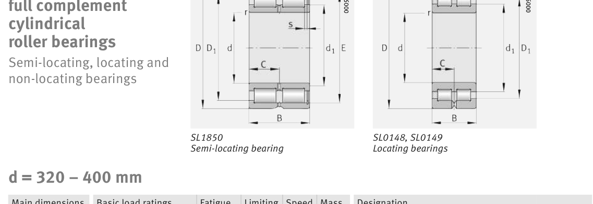

Original catalogue drawing - FAG Schaeffler HR 1, page 548

Scanned from the manufacturer catalogue page listing this part number. All part numbers printed on that table share the same drawing.
Scale cross-section
Blue = inner / outer ring, yellow = rolling element. Drawn to scale from this part's own
dimensions for selection reference only - not a manufacturing or assembly drawing.
Dimension table (mm / inch)
Symbol
Dimension
mm
inch
d
Bore diameter
360
14.1732
D
Outside diameter
540
21.2598
B
Inner-ring / bearing width
243
9.5669
C
Cup / outer-ring width
121.5
4.7835
r
Chamfer (min)
5
0.1969
E
Roller-set outside dia.
503.5
19.8228
Notes
Weights are given in kg. Load ratings are shown in both the original catalogue units and the converted value (1 N = 0.2248 lbf). Data is provided for selection reference only - confirm against the latest official catalogue before ordering.
Main dimensions
Bore d (mm)
360
Outside dia. D (mm)
540
Width B (mm)
243
Cup width C (mm)
121.5
Inner-ring OD d1 (mm)
413.8
Inner-ring shoulder dia. D1 (mm)
481
Dimension E (mm)
503.5
Dimension s (mm)
14
Load ratings & speeds
Basic dynamic load rating Cr (lbs)
989159
Basic static load rating Cor (lbs)
1955838
Basic dynamic load rating Cr (N)
4.4e+06
Basic static load rating C0r (N)
8.7e+06
Fatigue limit load Cur (N)
820000
Limiting speed nG (rpm)
680
Reference speed nB (rpm)
320
Weight
Weight (kg)
178.0
Mounting dimensions (fillets / shoulders)
Housing fillet r max (mm)
5
Shaft shoulder dc (mm)
413.5
Housing shoulder Da (mm)
481
Housing shoulder Db (mm)
503
Housing fillet ra max (mm)
5
Bearing life (ISO 281 basic rating life)
C / P
Equivalent load P (N)
L10 (106 rev)
L10h at 200 rpm
4
1,100,000
102
8,466
6
733,333
392
32,708
8
550,000
1,024
85,333
10
440,000
2,154
179,536
15
293,333
8,323
693,622
Basic rating life per ISO 281: L10 = (C/P)10/3 with C = 4,400,000 N. Hours = L10 x 106 / (60n). Life-modification factors for lubrication, contamination and temperature (aISO) are not included.
Source & traceability
Brand
FAG
Source catalogue
FAG / Schaeffler Rolling Bearings HR 1
Catalogue page
p.548 (dimensions)
Load ratings in newtons, fatigue limit load Cur, limiting speed nG and reference speed nB.
Send us the quantity you need and we will come back with price and
lead time, normally within 24 hours. Equivalent parts from other brands can be quoted at the same time.